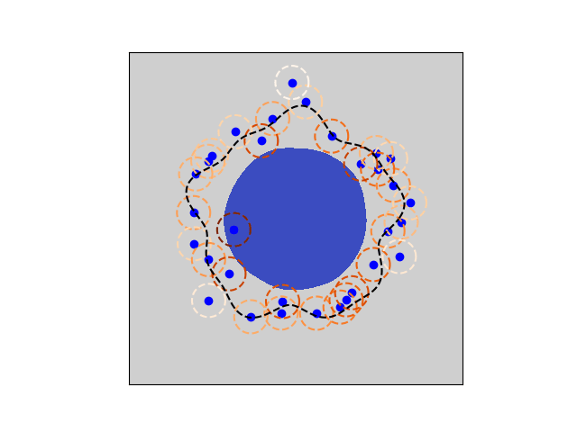

Let's imagine there's a giant mass of bad stuff out in the ocean somewhere.
In fact, we don't have to strain our imagination, really; it could be a catastrophic oil spill.
Or, it could be a floating hulk of crap.
Your goal is to figure out what this thing looks like; more precisely, you want to map out the topology of its boundary in some 2D, aerial view.
In order to do this, a fleet of boats are dispatched to a bunch of locations in the general area where you think the boundary likely is located.
Each of these boats takes a local measurement of the average concentration of oil (or trash, or whatever other horrible thing) at a fixed location near that boundary.
So, you have access to n tuples:
\[ (x_i,y_i,c_i) \;\;\; \text{for} \;\;\; i = 1 \dots n \]
where \(c_i\) is just the average concentration measured at location \((x_i,y_i)\).
In this post, I want to walk you through how you can use a level set method to map out the boundary.
It's a really satisfying approach that blends the modern emphasis on data-driven learning with a strong grounding in theory.
Problem setup: the oil spill
Here's what we're facing, in a picture:
Oil spill (blue) along with point sensor measurements. The oil spill shape (blue) is, of course, presently unknown. Each sensor reports a local average (within the dashed circles) of the oil concentration. The darker the orange, the higher the average local concentration.
Each of the sensors represents a boat that goes out into the ocean and takes a local measurement of the oil concentration at a fixed point somewhere near the boundary.
In our model problem, we represent that local average as a convolution of the concentration field with a Gaussian of small width:
where \( c(\mathbf{x}) \) is the oil spill concentration.
For simplicity, we take that to be a binary field: it's either equal to 1 (if you're within the oil spill boundary), or 0 otherwise.
Describing a spatial region with function level sets
In a blog post about using level set methods to solve a problem in oil spills, the most natural place to start is to connect the oil spill region to the concept of level sets of a function.
This is easier than it may sound: you simply define the oil spill region to be that region of space where some (unknown) function is negative:
The idea here is that there is some function out there -- which we don't yet know, but could potentially learn -- whose topology could match that of the oil spill mass.
Defining a 2D region using level sets of a function. In this example, we're defining a circular region as those (x,y) pairs for which the displayed quadratic function is negative. Also clear from this is how the zero level set determines the region's boundary.
Although this is already a perfectly valid mathematical definition of the region of interest, it'll be convenient to us later on if we could describe \( \mathcal{D} \) in terms of a smooth, differentiable function.
We know that the boundary is essentially determined by the zero level set of \(\phi(\mathbf{x})\), so we can build this using a smooth function that changes value quickly around zero:
with \( \epsilon \ll 0 \).
It's a bit ugly, but the point here is simple: \( \mathcal{I}( \phi(\mathbf{x}) ) \) is 1 for points \( \mathbf{x} \in \mathcal{D} \) and zero otherwise, except for a small, thin strip around the boundary, where it smoothly transitions in value between 0 and 1.
\( \mathcal{I}(\mathbf{x}) \) is essentially a smoothed one-indicator function, indicating whether or not a given spatial location is within \( \mathcal{D} \).
Making an initial guess, and refining it
Recall that our observed data represents a local spatial average of the concentration.
Assume also that we have an initial estimate for \( \phi(\mathbf{x}) \), which we'll call \( \phi^*(\mathbf{x}) \).
With that in hand, we can estimate the local average concentration at any spatial location:
where the right-hand-side \( \frac{dJ}{d\phi} \) can be computed by the chain rule.
Simulation of the system
Now we get to look at some pretty graphics showing how all of this shakes out.

Simulation showing the evolution of an approximation of the oil spill region, based on sensor measurements.
Neat, huh?
Notice how the accuracy of the inferred shape depends heavily on the local distribution of data:
a "boat" which straddles the boundary exactly carries more information than one that doesn't.
So, under resource constraints, the ideal distribution of sensors would be such that they'd all be placed somewhere along the boundary (though of course, we wouldn't know this a-priori, since that's what we're trying to learn in the first place).